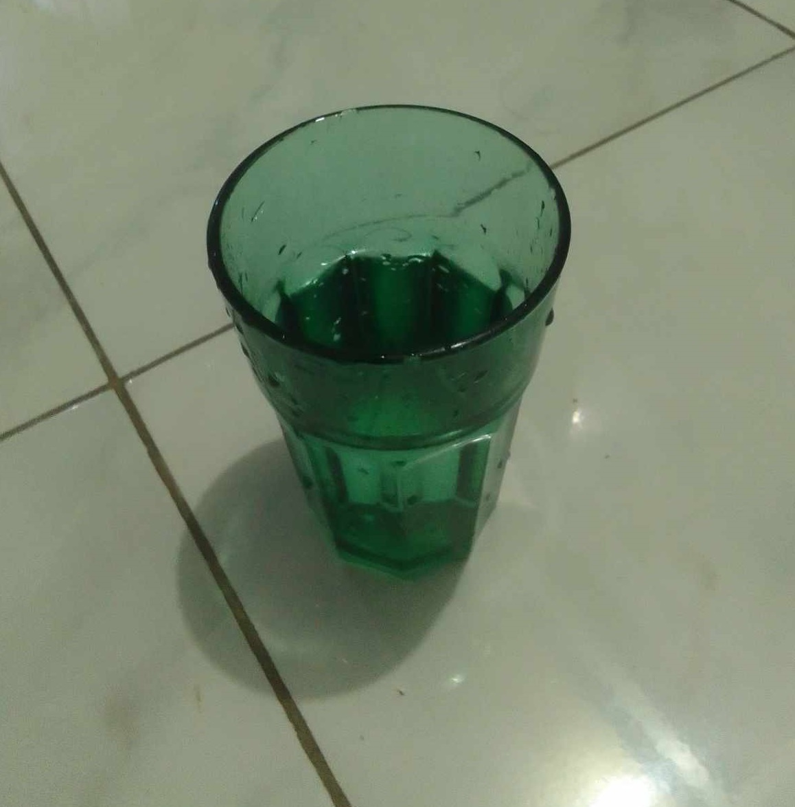

Science of Cholera

Cholera is a bacterial infection caused by the bacterium Vibrio cholerae. It primarily affects the intestines and can lead to severe diarrhea and dehydration.
Causative Agent
Cholera is caused by the bacterium Vibrio cholerae, specifically by serotypes O1 and O139. These bacteria are found in contaminated water sources, especially in areas with poor sanitation and hygiene practices.
Transmission
Cholera is typically transmitted through the consumption of contaminated water or food. The bacteria can survive in aquatic environments and can be transmitted through ingestion of contaminated shellfish, raw or undercooked seafood, or produce irrigated with contaminated water. Person-to-person transmission is less common but can occur in crowded or unsanitary conditions.
Pathogenesis
Once ingested, Vibrio cholerae bacteria colonize the small intestine. They produce a toxin known as cholera toxin, which is responsible for the characteristic symptoms of cholera. The toxin causes the lining of the small intestine to release large amounts of water and electrolytes, resulting in watery diarrhea.
Clinical Presentation
Cholera infection can range from asymptomatic to severe. The most common symptoms include profuse watery diarrhea, vomiting, and dehydration. Without prompt and adequate treatment, severe cases can lead to electrolyte imbalances, low blood pressure, shock, and even death due to dehydration.
Diagnosis
Cholera is often diagnosed based on clinical symptoms, especially in areas with known outbreaks. Laboratory confirmation involves isolating the bacteria from a stool sample. Rapid diagnostic tests based on detecting cholera toxin genes can also be used.
Treatment
Rehydration is the cornerstone of cholera treatment. Oral rehydration solutions (ORS) or intravenous fluids are used to replace lost fluids and electrolytes. Antibiotics like doxycycline or azithromycin can help reduce the duration and severity of symptoms but are not a substitute for rehydration.
Prevention
Preventing cholera primarily involves improving sanitation and hygiene. This includes providing access to clean drinking water, proper waste disposal, and promoting good hygiene practices like handwashing. Vaccines are also available, such as the oral cholera vaccine, which can provide protection against cholera in endemic areas.
Epidemics and Global Impact
Cholera outbreaks can occur in areas with inadequate sanitation and water supply infrastructure, especially after natural disasters or during conflicts. The disease can spread rapidly, leading to epidemics. Cholera has had a significant impact on public health throughout history and continues to affect vulnerable populations in many parts of the world.
Cholera's Historical Significance
Cholera played a significant role in the development of epidemiology and the understanding of infectious diseases. In the mid-19th century, the famous physician John Snow linked a cholera outbreak in London to contaminated water from a specific pump, helping to establish the theory of disease transmission through water.